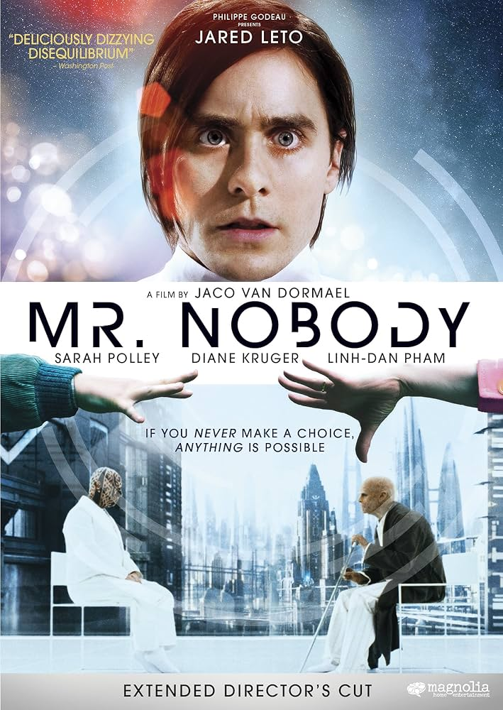

Títulos Preferidos
Filme
Mr. Nobody
"Todo caminho é o caminho certo. Tudo poderia ter sido qualquer outra coisa e teria sido igualmente importante."
Mr. Nobody
"Todo caminho é o caminho certo. Tudo poderia ter sido qualquer outra coisa e teria sido igualmente importante."
Série
Breaking Bad
"Ou você foge das coisas ou as enfrenta."
Breaking Bad
"Ou você foge das coisas ou as enfrenta."
Anime
Soul Eater
"Uma alma saudável habita uma mente saudável e um corpo saudável."

Soul Eater
"Uma alma saudável habita uma mente saudável e um corpo saudável."